숲 한가운데. 지난주 시안이 나뭇가지에 걸려 흔들린다.
오인턴
“시안은 나왔어.
근데 이 색, 이 모양은 내 취향이 아니야. 남의 템플릿이라 그런가.”
숲 한가운데. 지난주 시안이 나뭇가지에 걸려 흔들린다.
“시안은 나왔어.
근데 이 색, 이 모양은 내 취향이 아니야. 남의 템플릿이라 그런가.”
페어리가 시안 위를 한 바퀴 돈다.
“그럼 용사님 템플릿을 만들어요.
이번엔 남의 걸 빌리지 말고, 용사님 취향을 꺼내서요.”
오인턴이 팔짱을 낀다.
“내 취향을 꺼내라고?
‘깔끔하고 예쁘게’ 말고는 할 말이 없는데.”
페어리가 지난주 키워드 목록을 펼친다.
“그 ‘깔끔한’이 지난주에 사람마다 그림이 달랐잖아요.
그래서 이번엔 질문지를 써요. 물으면 답이 나와요.”
“오늘은 만드는 날이에요.
남의 템플릿 말고, 용사님 템플릿을요.”
정책자료 폴더를 이 대화에 연결한다 — 결과 폴더에 지난주 콘티가 있어야 한다.
회사색이 있으면 로고를 캡처해 둔다. 장이 많다 — 모델은 Opus 5.5 · 높음 이상 추천.
“말은 그림이 갈리고, 값은 안 갈려요.
질문지는 말을 값으로 바꾸는 종이예요.”
“세 칸에 답만 적으면 돼요.
빈칸이 있으면 시종이 만들기 전에 먼저 물어봐요.”
오인턴이 첫 칸 ‘색’ 앞에서 멈춘다.
“회사색은 알아.
근데 나머지 색은 뭘로 골라? 난 색 감각이 없는데.”
페어리가 공중에 색 조각 세 장을 띄운다.
“감각은 빌리면 돼요.
색 고르는 사이트가 셋 있어요. 고른 화면을 캡처해서 넣으면 끝이에요.”
메뉴 이름과 위치는 사이트가 바뀌면 달라질 수 있다. 2026-10-30 기준.
“코드는 안 적어도 돼요.
캡처에 코드가 보이면 그대로 옮기고, 안 보이면 뽑아서 먼저 보여 줘요.”
페어리가 팔레트 캡처 옆에 빈 액자 하나를 더 띄운다.
“만약 회사의 대표색이 있다면,
그 색을 캡처로 가져와서 쓸 수도 있어요.”
액자 둘이 나란히 떠 있다. 하나엔 팔레트, 하나엔 회사색.
“실습은 색 팔레트로만 해보겠지만,
회사 색만으로 템플릿을 만들거나 회사 색 + 컬러 팔레트 조합으로 만들 수도 있어요.”
둘째 칸 ‘모양’. 오인턴이 펜을 든 채 굳는다.
“모양은 또 어떻게 정해?
표지, 본문… 그다음엔 무슨 장이 있는지도 모르겠는데.”
페어리가 두꺼운 책을 끌고 온다. 표지에 ‘장 종류 도감’.
“그래서 도감이 있어요. 열여섯 가지를 전부 만들어 둬요.
쓸 땐 시종이 내용에 맞는 장을 골라 늘리고 줄여 써요.”
“미리 다 만들어 두면, 시안 때 시종이 골라 변형해 써요.
용사님은 나온 걸 보고 고르기만 하면 돼요.”
숫자는 예시다. 큰 회의실이면 키운다. 모르면 ‘알아서’ — 시종이 정하고, 정한 값을 보고에 적는다. 글꼴이 내 컴퓨터에 없으면 맑은 고딕으로 바꾼다.
“모서리도 정답은 없어요.
듣는 사람이 좋아하는 쪽, 그게 용사님 답이에요.”
셋째 칸 ‘그래프’. 오인턴이 고개를 갸웃한다.
“그래프는 왜 칸이 따로야?
숫자 넣으면 알아서 그려 주는 거 아니었어?”
페어리가 날개를 접는다. 잠깐 말이 없다.
“질문지엔 그래프 모양만 적어요.
숫자는… 시안 만들 때 따로 얘기해요. 그게 제일 위험한 데라서요.”
템플릿의 그래프 장은 도형으로 모양만 그리고 ‘그래프 자리 — 숫자는 시안 때’라고 적어 둔다. 예시 숫자를 넣으면, 그 숫자가 진짜인 척 시안까지 따라간다.
진짜 숫자는 시안을 만들 때 콘티에서 들어온다. 6주차 ‘내용과 모양을 따로’와 같은 이유다.
주문서를 복사한 뒤, 정책자료 폴더에서 오른쪽 클릭 → 새로 만들기 → 텍스트 문서. 열어서 붙여 넣고 다른 이름으로 저장 — 파일 형식은 ‘모든 파일’, 이름은 템플릿_질문지.md.
저장하고 보니?
빈 질문지가 생겼다.
정책자료 폴더 안에 디자인 폴더를 만든다. 사이트에서 고른 팔레트 화면을 캡처해 넣고(예: 팔레트.png), 질문지 ① 색에 그 파일 이름을 적는다. 회사색이 있으면 코드나 CI 화면 캡처 파일 이름을 적는다. 둘 중 하나만 써도 된다 — 안 쓰는 줄은 지운다.
* 색상 코드가 화면에 보이게 찍으면 시종이 글자를 그대로 옮겨서 더 정확하다. 안 보여도 된다 — 뽑은 색은 만들기 전에 표로 보여 준다.
넣고 보니?
색이 그림 한 장이 됐다.
장 종류는 고르지 않는다 — 주문서에 스물한 장 전부 적혀 있다. 내가 고르는 건 모서리, 글꼴, 글자 크기, 여백. 괄호 안을 답으로, 보기는 하나만 남긴다. 모르는 칸은 ‘알아서’. 글꼴은 이름 대신 ‘KoPub 계열 중 적절한 것으로’처럼 계열만 적어도 된다.
다 적고 보니?
모양이 값이 됐다.
그래프 모양을 고르고, ‘템플릿 이름’ 칸의 괄호에 이름을 적는다 — ‘예: 청록보고’는 예시일 뿐이다. 숫자는 적지 않는다. 다 채웠으면 저장한다.
저장하고 보니?
질문지 완성. 내 취향이 처음으로 글자가 됐다.
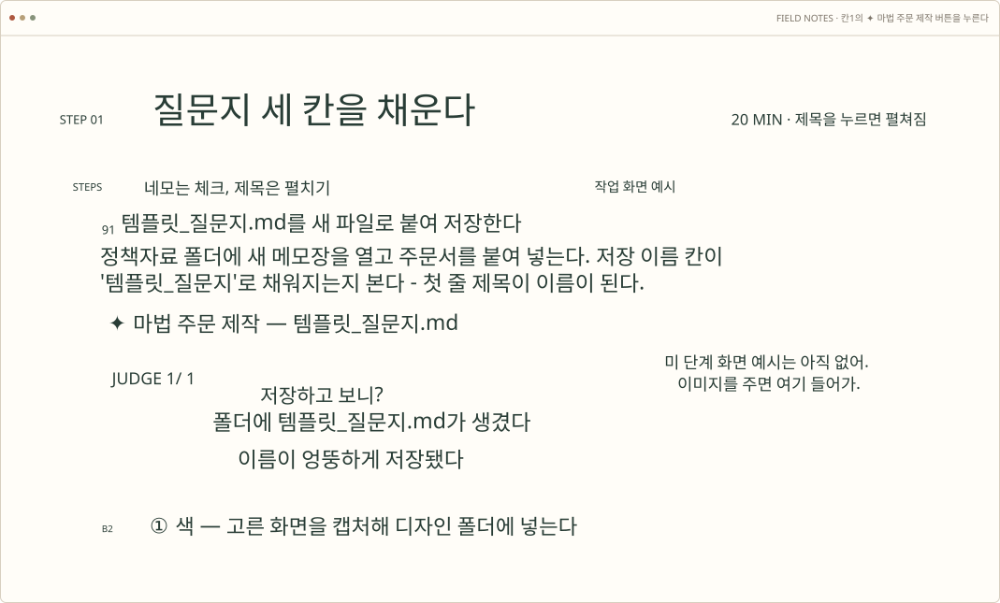
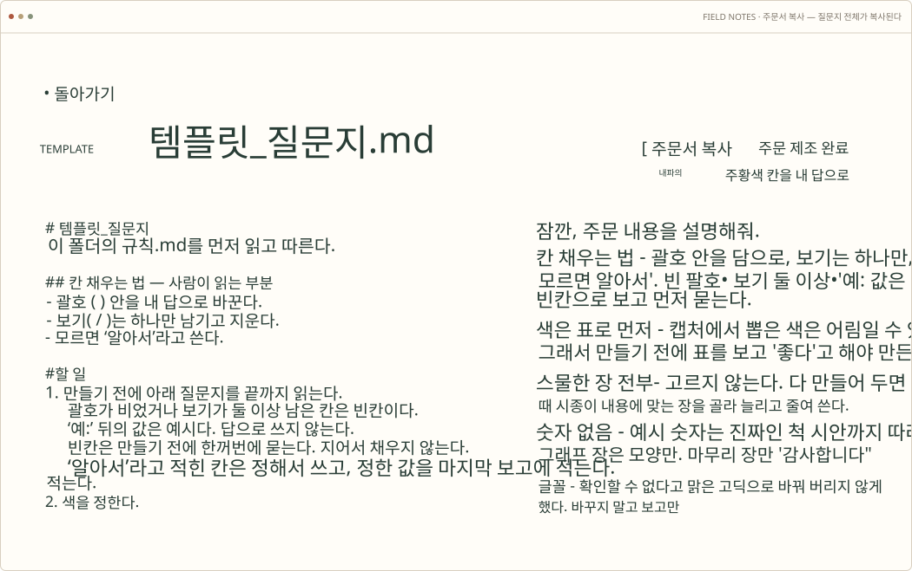
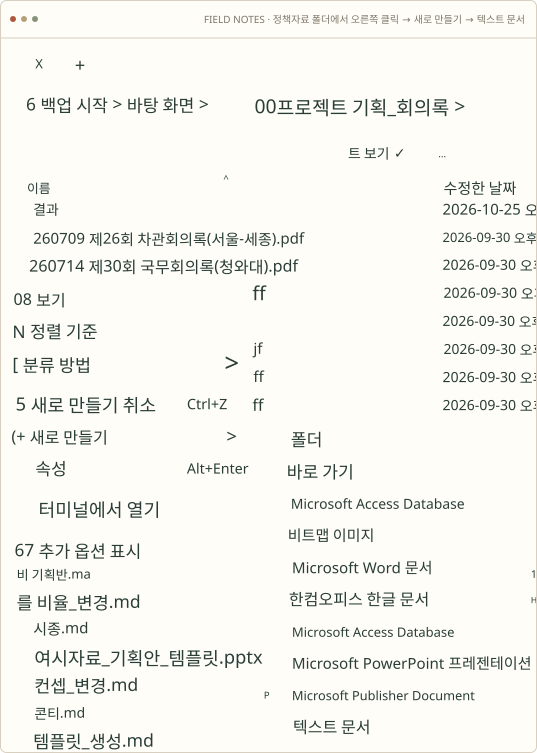
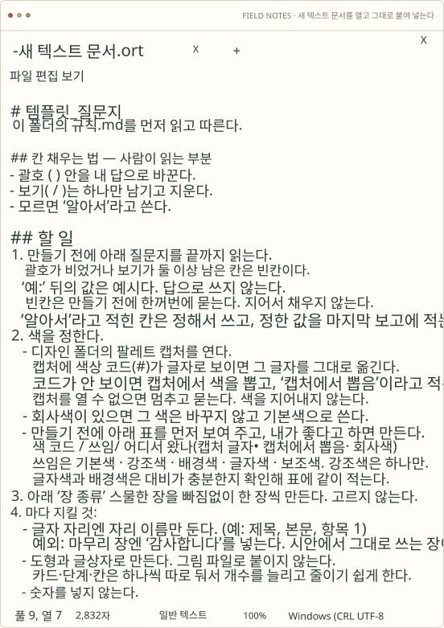
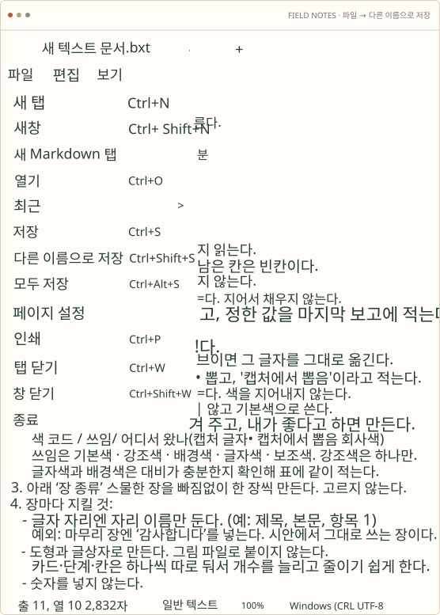
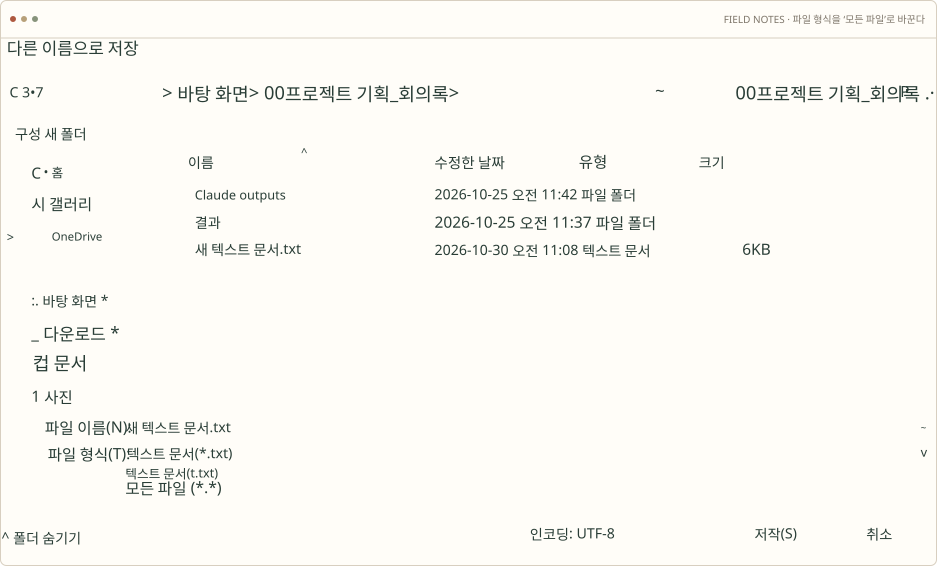
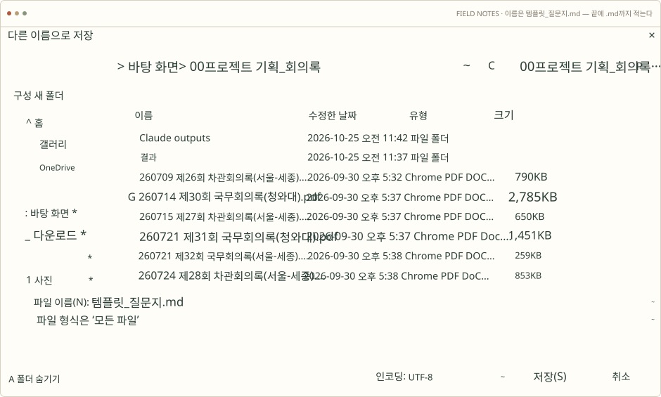
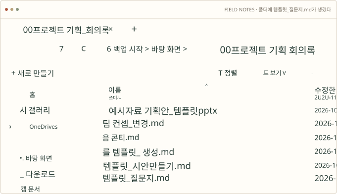
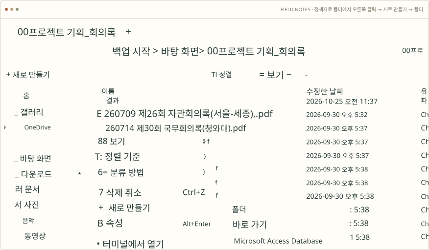
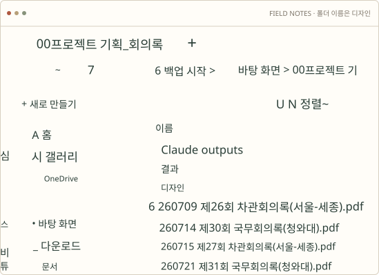
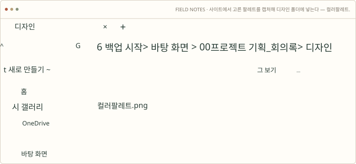
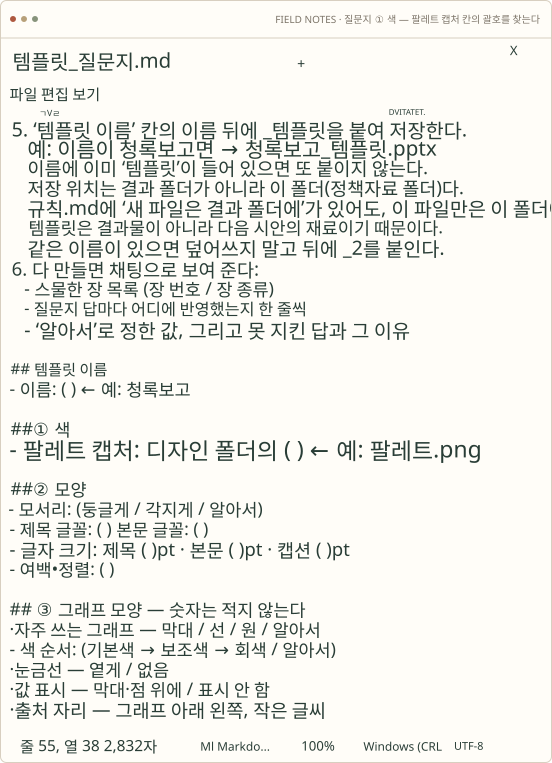
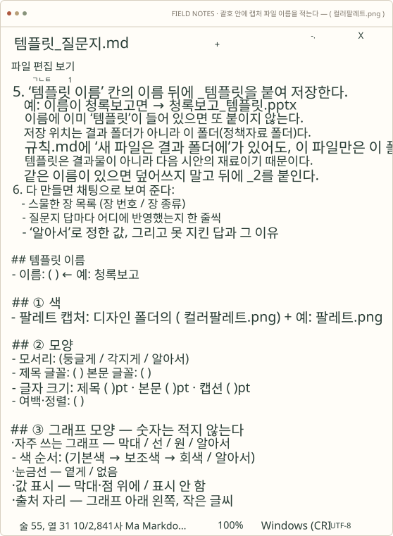
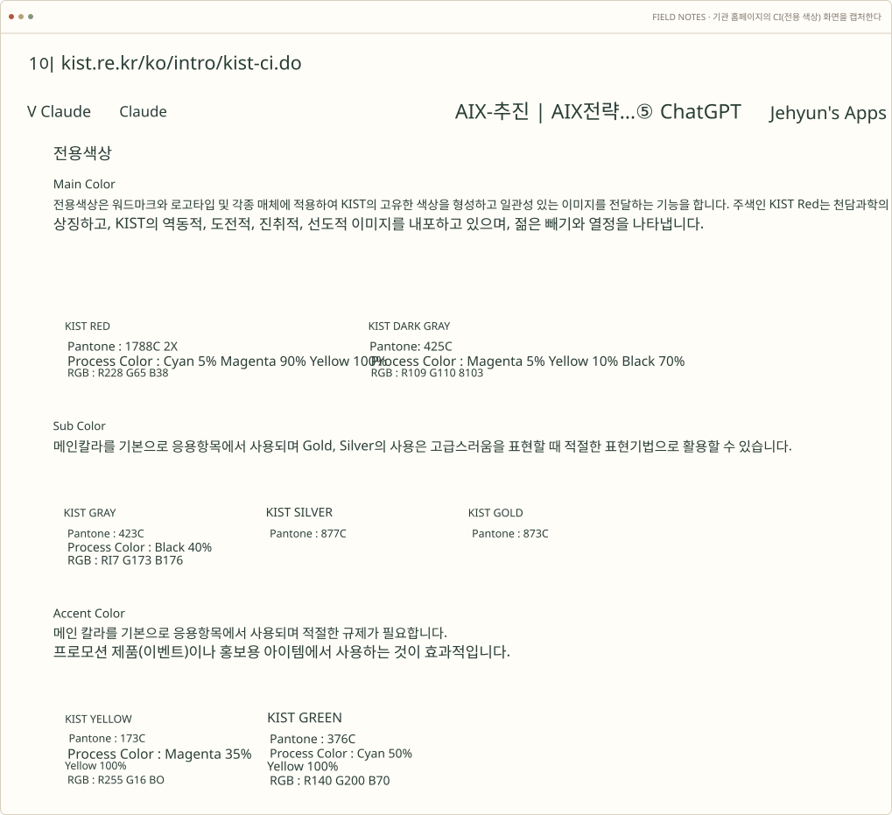
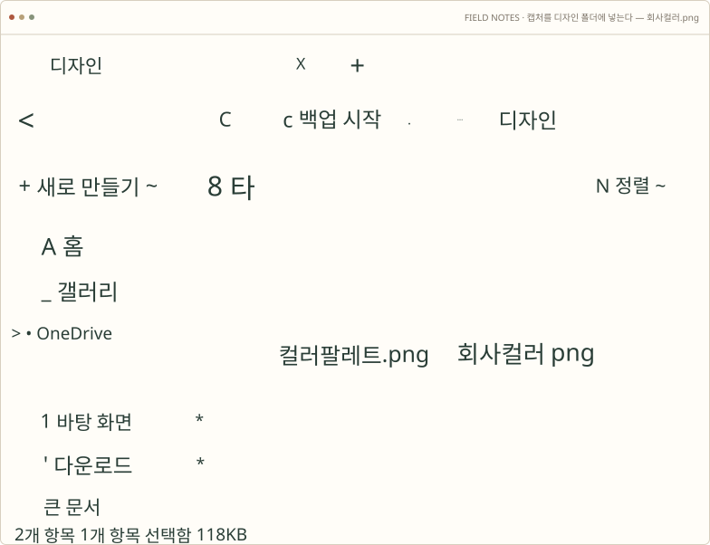
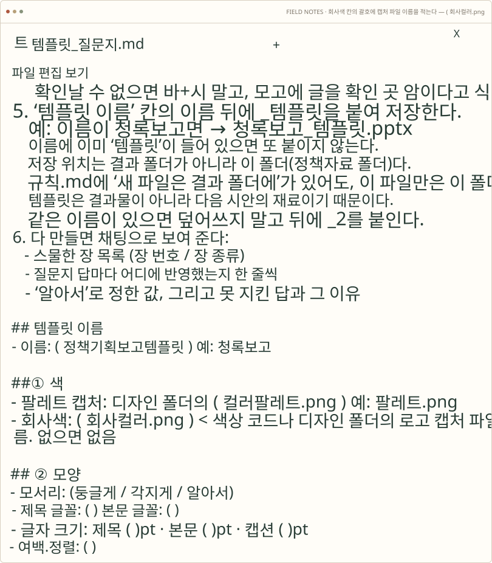
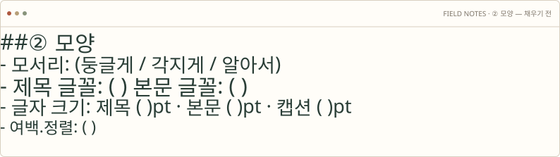
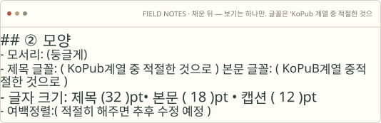
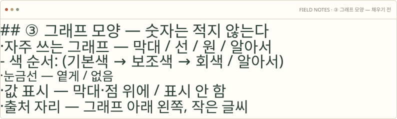
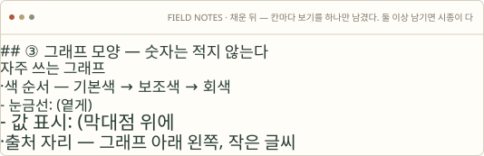
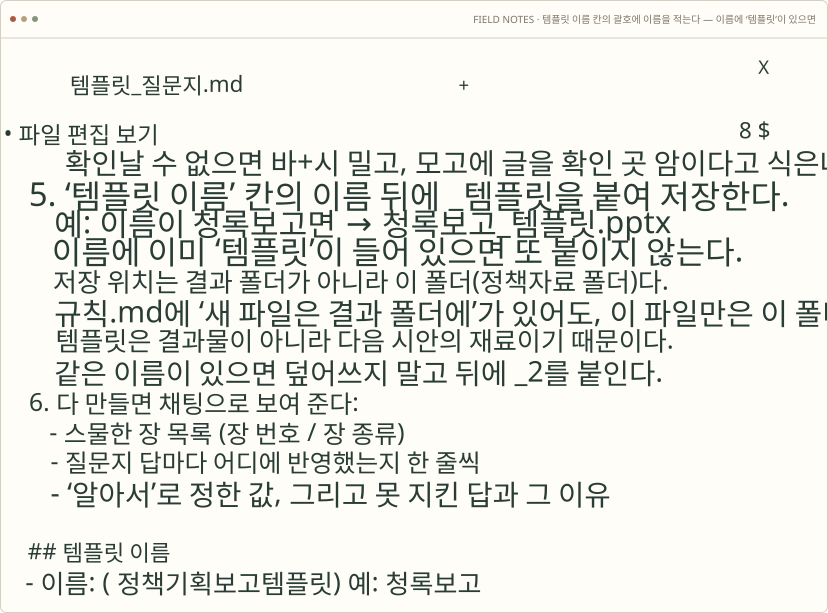
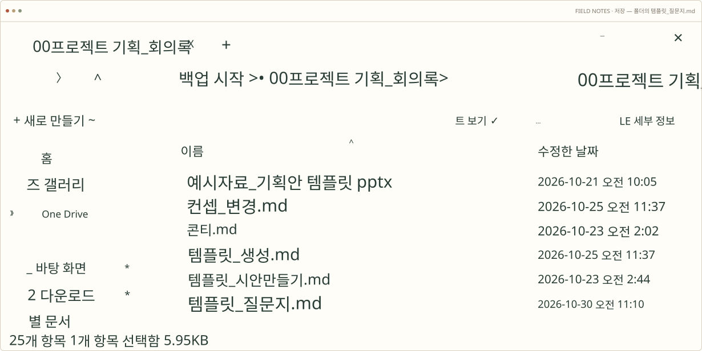
# 템플릿_질문지 이 폴더의 규칙.md를 먼저 읽고 따른다. 규칙.md와 이 주문서가 다르면 이 주문서를 따르고, 다른 점을 보고에 적는다. ## 칸 채우는 법 — 사람이 읽는 부분 - 괄호 ( ) 안을 내 답으로 바꾼다. - 보기( / )는 하나만 남기고 지운다. - 모르면 ‘알아서’라고 쓴다. - 팔레트·회사색 중 하나만 쓸 거면, 안 쓰는 줄은 지운다. ## 할 일 1. 만들기 전에 아래 질문지를 끝까지 읽는다. 괄호가 비었거나 보기가 둘 이상 남은 칸은 빈칸이다. ‘예:’ 뒤의 값은 예시다. 답으로 쓰지 않는다. 빈칸은 만들기 전에 한꺼번에 묻는다. 지어서 채우지 않는다. ‘알아서’라고 적힌 칸은 정해서 쓰고, 정한 값을 마지막 보고에 적는다. ‘적절히’·‘알아서 해줘’처럼 맡긴다는 답도 ‘알아서’로 본다. 2. 색을 정한다. - ‘팔레트 캡처’ 칸에 적힌 파일만 연다. 그 줄이 없거나 ‘없음’이면 팔레트는 쓰지 않는다. 디자인 폴더의 다른 그림을 찾아 쓰지 않는다. 캡처에 색상 코드(#)가 글자로 보이면 그 글자를 그대로 옮긴다. 코드가 안 보이면 캡처에서 색을 뽑고, ‘캡처에서 뽑음’이라고 적는다. 캡처를 열 수 없으면 멈추고 묻는다. 색을 지어내지 않는다. - 회사색 칸에 캡처 파일 이름이 있으면 그 캡처를 연다. RGB 값이 글자로 보이면 그 값을 색상 코드(#)로 바꿔 쓴다. 색이 여러 개면 ‘Main’·‘주색’이라고 적힌 색을 기본색으로 쓴다. 어느 것이 주색인지 모르면 묻는다. 회사색은 바꾸지 않는다. - 팔레트와 회사색이 둘 다 있으면 회사색이 먼저다. 팔레트 색은 회사색과 어울리는 것만 배경·보조 후보로 쓴다. - 회사색만 있으면 회사색 캡처 안의 색으로 다섯 쓰임을 채운다. 배경·글자처럼 캡처에 없는 색이 필요하면 흰색·검정 계열에서 고르고 표에 적는다. - 만들기 전에 아래 표를 먼저 보여 주고, 내가 좋다고 하면 만든다. 색 코드 / 쓰임 / 어디서 왔나(캡처 글자 · 캡처에서 뽑음 · 회사색 · RGB에서 바꿈) 쓰임은 기본색 · 강조색 · 배경색 · 글자색 · 보조색. 강조색은 하나만. 카드 면·선·회색 막대·캡션처럼 회색이 필요하면 ‘중립색’으로 표에 같이 넣는다. 안을 여러 개 내면 안마다 표를 보여 준다. 표에 없는 색은 쓰지 않는다. 글자색과 배경색은 대비가 충분한지 확인해 표에 같이 적는다. 3. 아래 ‘장 종류’ 스물한 장을 빠짐없이 한 장씩 만든다. 고르지 않는다. 4. 장마다 지킬 것: - 글자 자리엔 자리 이름만 둔다. (예: 제목, 본문, 항목 1) 예외: 마무리 장엔 ‘감사합니다’를 넣는다. 시안에서 그대로 쓰는 장이다. - 도형과 글상자로 만든다. 그림 파일로 붙이지 않는다. 카드·단계·칸은 하나씩 따로 둬서 개수를 늘리고 줄이기 쉽게 한다. - 값·수치·날짜를 넣지 않는다. 자리 이름의 번호(항목 1, 단계 1)와 노트의 설명 글은 괜찮다. 슬라이드 번호는 넣지 않는다. 필요하면 사람이 ‘삽입 → 슬라이드 번호’로 켠다. 그래프 장은 도형으로 모양만 그리고 ‘그래프 자리’라고 적는다. 큰 숫자 장엔 ‘숫자’, 표 장엔 ‘항목’ ‘값’이라고만 쓴다. - 슬라이드 노트에 그 장을 언제 쓰는지 한 줄 적는다. 아래 장 종류 목록의 설명을 그대로 쓴다. - 색·모서리·글꼴·글자 크기는 질문지 답대로, 모든 장에 같게. 예외: 큰 숫자 장의 ‘숫자’ 자리는 제목보다 크게 해도 된다. - 글꼴 칸에 ‘KoPub 계열’처럼 계열만 적혀 있으면 그 계열 안에서 제목·본문에 맞는 글꼴을 정하고, 정한 이름을 보고에 적는다. - 글꼴은 적은 이름 그대로 넣는다. 내 PC에 그 글꼴이 있는지 확인할 수 없으면 바꾸지 말고, 보고에 ‘글꼴 확인 못 함’이라고 적는다. 5. ‘템플릿 이름’ 칸의 이름 뒤에 _템플릿을 붙여 저장한다. 예: 이름이 청록보고면 → 청록보고_템플릿.pptx 이름에 이미 ‘템플릿’이 들어 있으면 또 붙이지 않는다. 저장 위치는 결과 폴더가 아니라 이 폴더(정책자료 폴더)다. 규칙.md에 ‘새 파일은 결과 폴더에’가 있어도, 이 파일만은 이 폴더에 둔다. 템플릿은 결과물이 아니라 다음 시안의 재료이기 때문이다. 같은 이름이 있으면 덮어쓰지 말고 뒤에 _2를 붙인다. 6. 다 만들면 채팅으로 보여 준다: - 스물한 장 목록 (장 번호 / 장 종류) - 질문지 칸마다 한 줄씩, 칸 이름을 그대로 써서 어디에 반영했는지: 이름 · 팔레트 캡처 · 회사색 · 모서리 · 제목 글꼴 · 본문 글꼴 · 글자 크기 · 여백·정렬 · 자주 쓰는 그래프 · 색 순서 · 눈금선 · 값 표시 · 출처 자리 한 칸도 빼지 않는다. 지운 줄은 ‘지움’, 못 한 칸은 ‘못 함’과 이유. - ‘알아서’로 정한 값, 그리고 못 지킨 답과 그 이유 ## 템플릿 이름 - 이름: ( ) ← 예: 청록보고 ## ① 색 - 팔레트 캡처: 디자인 폴더의 ( ) ← 예: 팔레트.png - 회사색: ( ) ← 색상 코드나 디자인 폴더의 로고 캡처 파일 이름. 없으면 없음 ## ② 모양 - 모서리: (둥글게 / 각지게 / 알아서) - 제목 글꼴: ( ) 본문 글꼴: ( ) - 글자 크기: 제목 ( )pt · 본문 ( )pt · 캡션 ( )pt - 여백·정렬: ( ) ## ③ 그래프 모양 — 숫자는 적지 않는다 - 자주 쓰는 그래프: (막대 / 선 / 원 / 알아서) - 색 순서: (기본색 → 보조색 → 회색 / 알아서) - 눈금선: (옅게 / 없음) - 값 표시: (막대·점 위에 / 표시 안 함) - 출처 자리: 그래프 아래 왼쪽, 작은 글씨 ## 장 종류 — 스물한 장 모두 만든다 기본 장 1 표지 — 발표 제목과 부제 2 목차 — 덩어리 이름 차례 3 간지 — 덩어리 사이에 넣는 제목 장 4 마무리 — 끝인사 5 참고 자료 — 출처와 링크 목록. 맨 끝 장 카드형 6 세로 카드 — 기둥 2~4개를 나란히. 대등한 항목 7 가로 카드 — 긴 띠 3~4줄을 위아래로. 항목마다 설명이 길 때 8 격자 카드 — 2×2, 2×3. 항목 4~6개 도형형 9 원형 순환 — 원 둘레를 화살표로. 반복되는 절차 10 삼각형 — 피라미드. 위계·우선순위 11 깔때기 — 위가 넓고 아래가 좁다. 걸러지는 과정 12 방사형 — 가운데 하나에서 가지. 핵심 하나와 하위 요소 13 벤 다이어그램 — 원 겹침. 공통점과 차이 흐름형 14 화살표 단계 — 1→2→3. 순서 있는 절차 15 타임라인 — 가로선 위에 점. 추진 일정 숫자형 16 그래프 설명형 — 한쪽 그래프 자리, 한쪽 해석과 출처 17 큰 숫자형 — 핵심 수치 1~3개를 크게 18 표형 — 행·열 비교 분할형 19 좌우 분할 — 그림·캡처 반, 글 반 20 VS 비교 — 현재 vs 제안, 전 vs 후 21 사분면 — 축 두 개로 네 칸 ## 다 됐다는 기준 - 정책자료 폴더에 할 일 5의 이름으로 pptx가 새로 생겼다. 원래 있던 템플릿 파일은 그대로다. - 스물한 장이 모두 있고, 장마다 노트에 쓰임이 한 줄 있다. - 색은 내가 좋다고 한 표대로다. 회사색은 바뀌지 않았다. - 내용 글자와 값이 없다(마무리의 ‘감사합니다’ 빼고). 그래프 장은 도형 모양뿐이다. - 보고에 질문지 칸이 하나도 빠짐없이 있다. 못 한 칸은 이유를 적었다. - 하나라도 안 되면 멈추고 물어본다.
칸 채우는 법 — 괄호 안을 답으로, 보기는 하나만, 모르면 ‘알아서’. 빈 괄호·보기 둘 이상·‘예:’ 값은 빈칸으로 보고 먼저 묻는다.
색은 표로 먼저 — 캡처에서 뽑은 색은 어림일 수 있다. 그래서 만들기 전에 표를 보고 ‘좋다’고 해야 만든다.
스물한 장 전부 — 고르지 않는다. 다 만들어 두면 시안 때 시종이 내용에 맞는 장을 골라 늘리고 줄여 쓴다.
숫자 없음 — 예시 숫자는 진짜인 척 시안까지 따라간다. 그래프 장은 모양만. 마무리 장만 ‘감사합니다’.
글꼴 — 확인할 수 없다고 맑은 고딕으로 바꿔 버리지 않게 했다. 바꾸지 말고 보고만.
(이름)_템플릿.pptx — 이름 칸에 적은 이름 뒤에 _템플릿이 붙는다. 이름에 ‘템플릿’이 들어가야 템플릿_시안만들기.md가 찾는다.
정책자료 폴더에 — 규칙.md는 ‘새 파일은 결과 폴더에’라고 한다. 템플릿만은 예외라고 이유와 함께 적어 뒀다. 안 적으면 두 줄이 부딪힌다.
오인턴이 질문지를 들어 올린다. 빈칸이 거의 없다.
“다 채웠다.
내 취향이 글자로 적힌 건 처음이야. 좀 낯간지럽네.”
페어리가 질문지 위에 내려앉는다.
“이제 이 종이를 시종한테 줘요.
시종이 물어볼 걸, 이번엔 종이가 먼저 대답해 둔 거예요.”
정책자료 폴더가 붙은 새 대화에서 「템플릿_질문지.md 읽고, 내 템플릿 만들어줘」. 시종이 빈칸을 묻고, 색 표를 먼저 보여 준다. 표를 보고 좋으면 “좋다”, 고르라면 고르고, 바꿀 게 있으면 말로.
보내고 나니?
색이 정해졌다. 이제 장을 짓는다.
스물한 장이라 시간이 걸린다. 끝나면 정책자료 폴더에 (내 이름)_템플릿.pptx가 생겨야 하고, 시종이 장 목록과 질문지 반영 내역을 보여 준다.
폴더를 열어 보니?
내 이름이 붙은 템플릿이 생겼다.
장 목록을 옆에 두고 넘겨 본다. 스물한 장이 다 있나, 색이 표대로인가, 숫자와 내용 글자는 없나. 고칠 점은 파워포인트가 아니라 말로 — 장 번호와 바라는 모양을 같이.
넘겨 보니?
글자와 숫자는?
질문지가 스물한 장짜리 템플릿이 됐다.
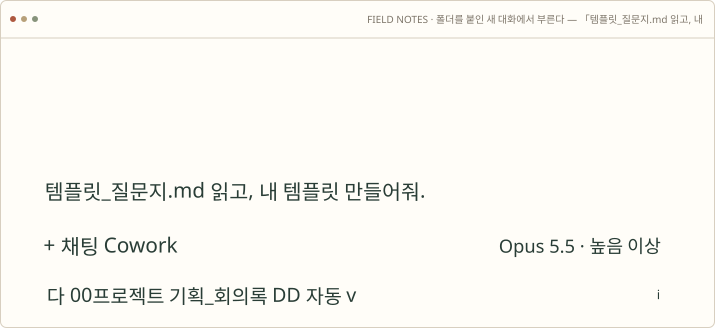
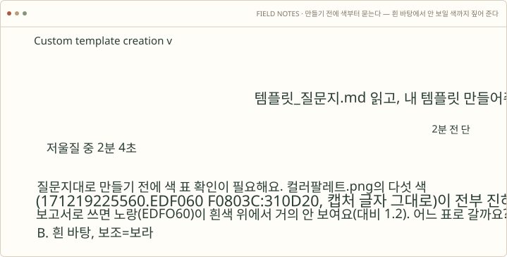
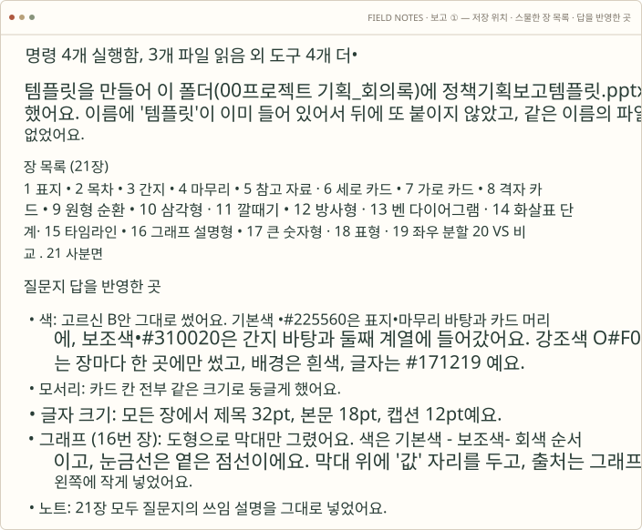
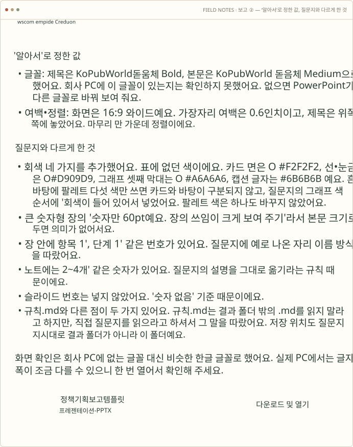
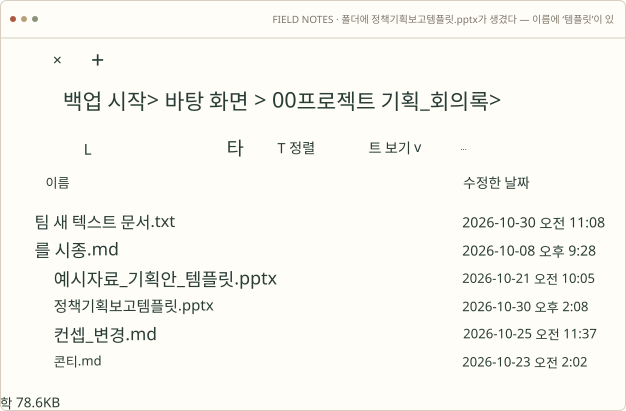
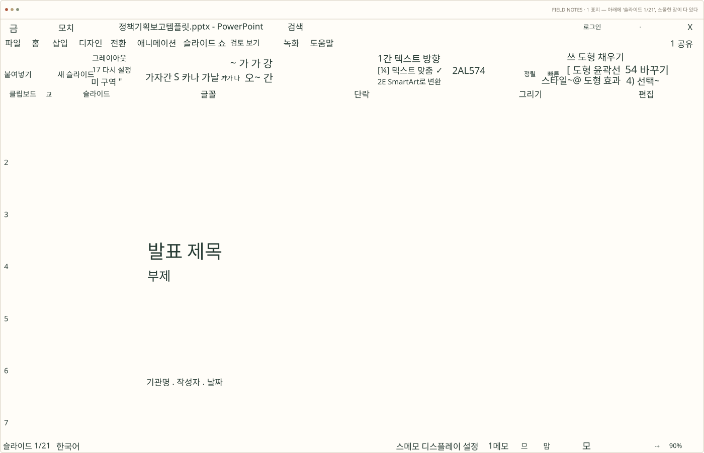
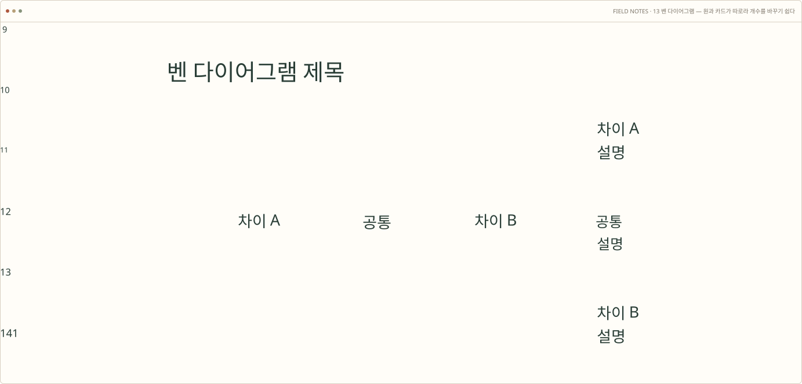
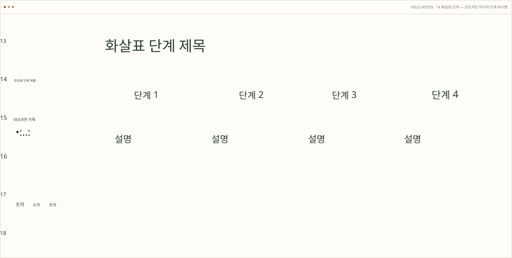
파워포인트에 처음 보는 템플릿이 열린다. 스물한 장.
“이건 처음 보는데 낯이 익어.
내가 고른 색, 내가 고른 모양이라 그런가.”
페어리가 화면 앞에서 빙글 돈다.
“시종이 지은 게 아니라 용사님이 답한 거예요.
시종은 받아 적었을 뿐이에요.”
오인턴이 16번 그래프 장에서 멈춘다. ‘그래프 자리 — 숫자는 시안 때’.
“그래프 장은 모양뿐이네.
시안 만들 때 숫자 넣으면 알아서 그려 주겠지?”
페어리가 날개를 곤두세운다. 숲이 조용해진다.
“그 ‘알아서’가 제일 위험해요.
…잠깐, 저 소리 들려요?”
2주차에 빈칸을 그럴듯하게 채우던 그놈이다. 그래프에서 제일 세다. 막대 하나 높이만 바꿔도, 축을 살짝 잘라도 아무도 원문을 찾아보지 않는다. 숫자가 비면, 비었다고 하지 않고 그린다.
오인턴이 칼을 고쳐 쥔다.
“저 녀석, 2주차의 그놈이잖아.
검증 세 줄로 쫓아냈는데 왜 또 나와?”
페어리가 오인턴 앞을 막아선다.
“검증 세 줄은 글로 쓴 숫자를 지켜요. 그래프는 아직 아무도 안 지키고 있어요.
그래서 그래프 규칙을 파일로 새겨요. 말로 하면 다음 대화에서 잊어요.”
96이 92의 세 배처럼 보인다. 숫자는 하나도 안 틀렸는데 인상이 틀렸다.
거의 같아 보인다. 이게 맞는 인상이다. 그래서 그래프.md엔 모양 규칙도 넣는다.
“숫자를 지어내는 것만 그럴듯이 아니에요.
맞는 숫자로 틀린 인상을 주는 것도 그럴듯이에요.”
질문지 때처럼 새 텍스트 문서에 붙여 넣고 다른 이름으로 저장 — 파일 형식 ‘모든 파일’, 이름 그래프.md.
저장하고 보니?
그래프 규칙이 파일이 됐다.
규칙.md를 열고 Ctrl+A → Ctrl+V로 통째로 덮어쓴다. 주황색 셋이 이번 주 추가분 — 자료가 아닌 것, 템플릿, 그래프. 모든 시종이 규칙.md부터 읽으니, 여기 한 줄이면 그래프를 그리는 시종은 전부 그래프.md를 읽는다.
덮어쓰고 보니?
규칙.md가 그래프.md를 가리킨다.
새 대화에 폴더를 연결하고 지난주 문장 그대로 「템플릿_시안만들기.md 읽고, 결과 폴더의 2026-10-23_콘티.md로 시안 만들어줘」 — 날짜는 내 결과 폴더의 콘티 이름 그대로. 템플릿을 물으면 방금 만든 걸 고른다. 시안과 함께 그래프 점검표가 나와야 한다. 숫자 하나를 골라 콘티와 대 본다.
* 규칙.md를 바꿨으니 새 대화에서 부른다. 같은 대화는 앞서 읽은 규칙을 기억하고 있을 수 있다.
시안을 열어 보니?
그래프 점검표는?
3막 2/3 완료. 모양은 질문지가, 숫자는 그래프.md가 지킨다.
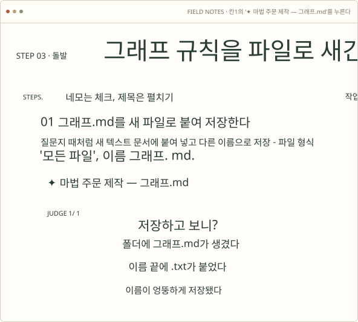
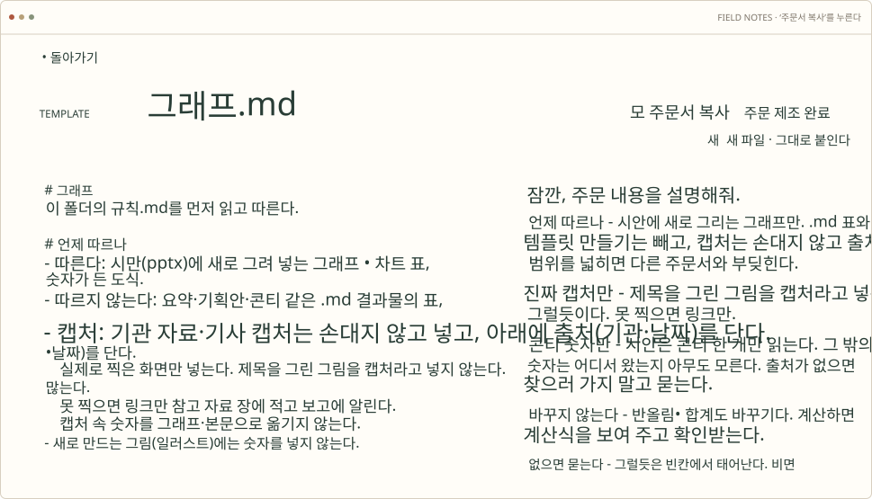
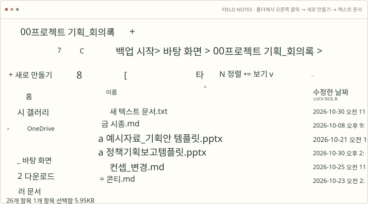
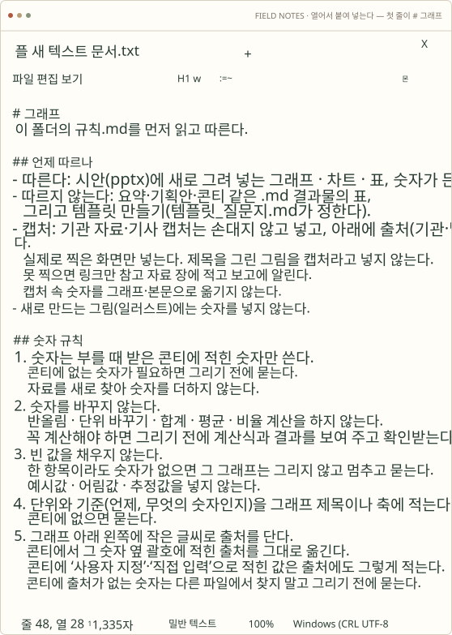
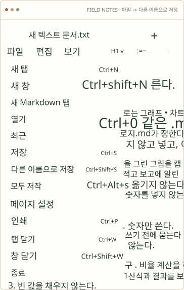
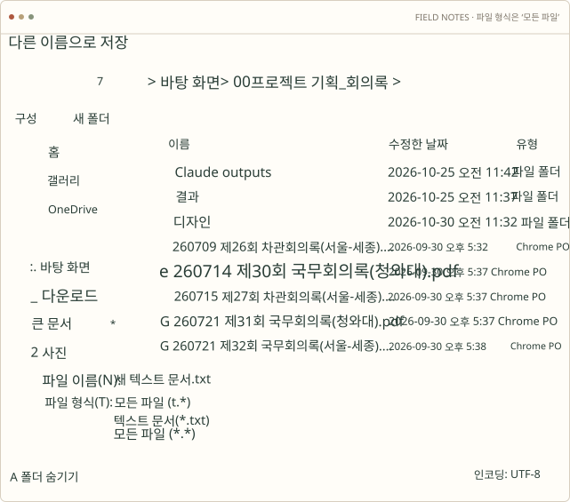
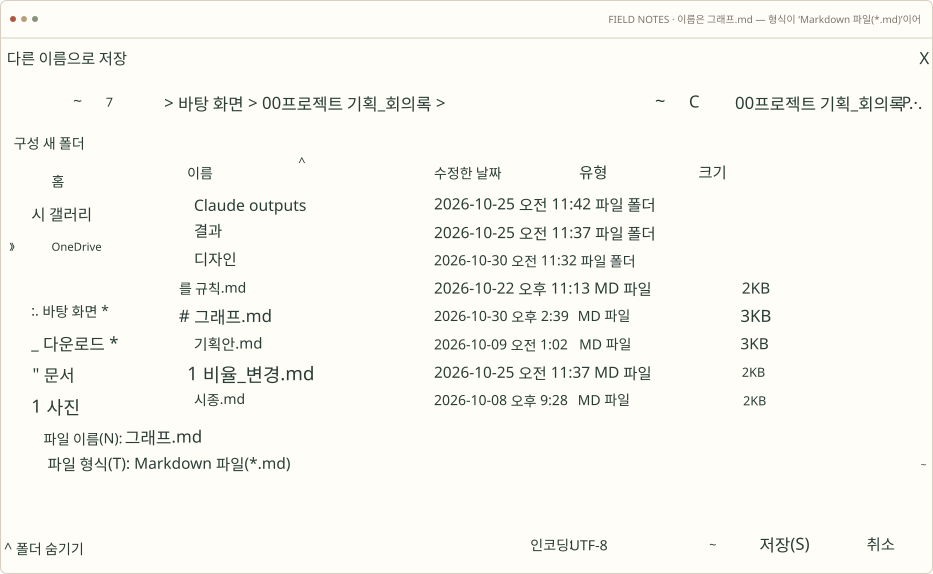
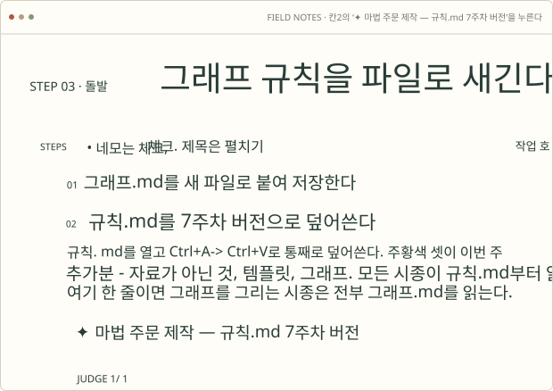
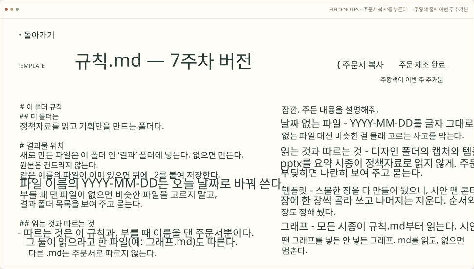
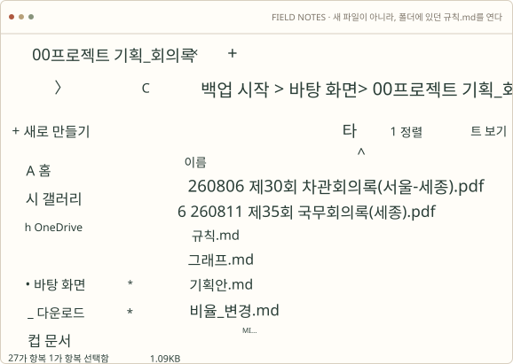
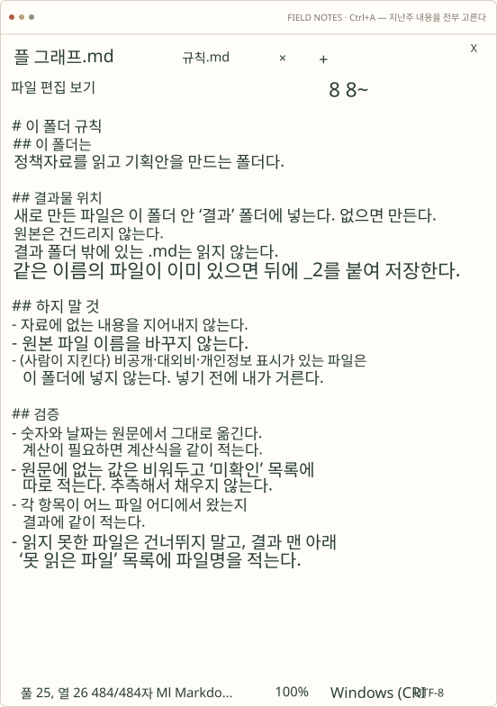
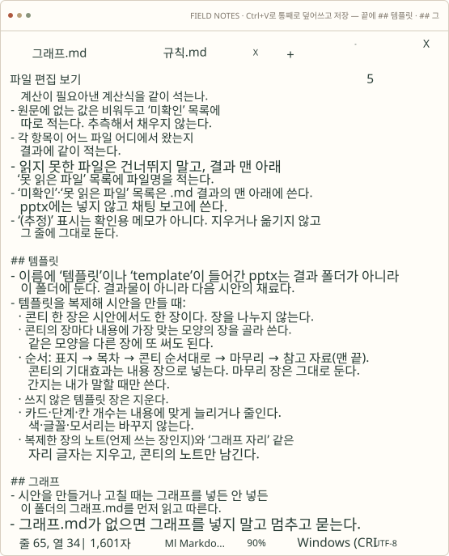
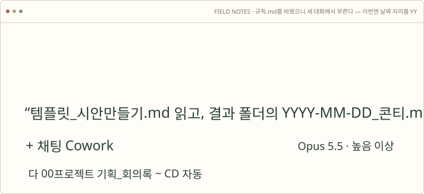
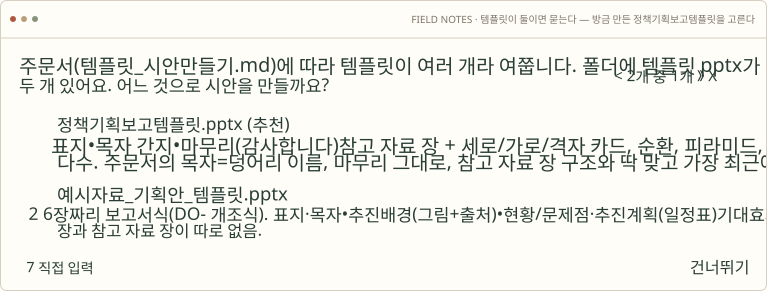
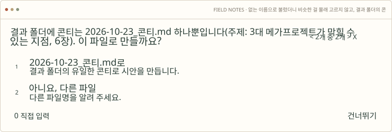
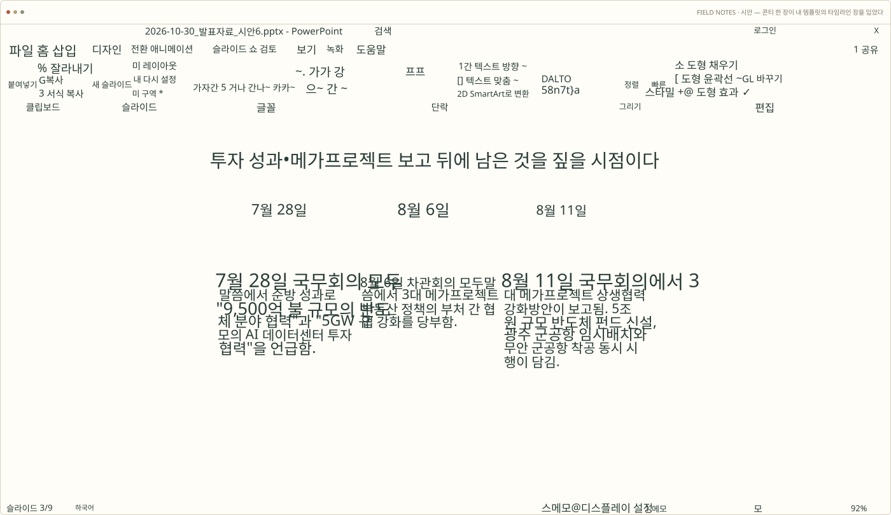
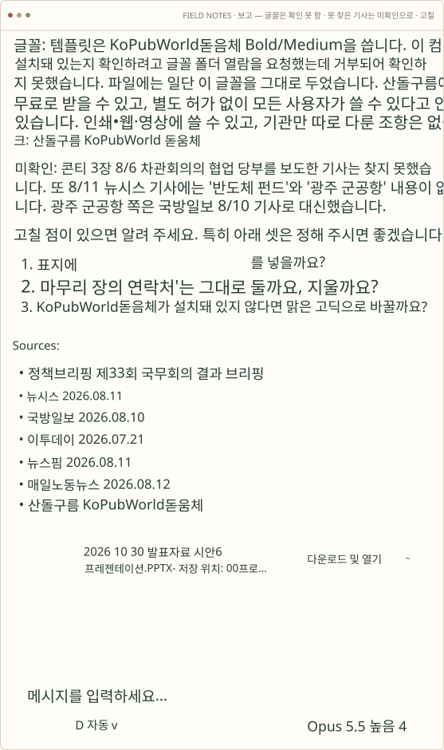
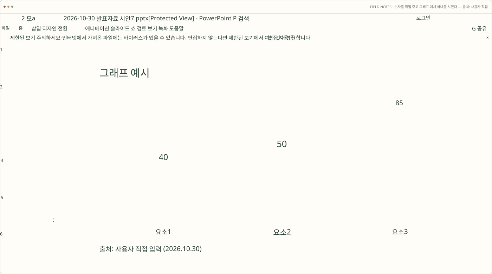
# 그래프 이 폴더의 규칙.md를 먼저 읽고 따른다. ## 언제 따르나 - 따른다: 시안(pptx)에 새로 그려 넣는 그래프 · 차트 · 표, 숫자가 든 도식. - 따르지 않는다: 요약·기획안·콘티 같은 .md 결과물의 표, 그리고 템플릿 만들기(템플릿_질문지.md가 정한다). - 캡처: 기관 자료·기사 캡처는 손대지 않고 넣고, 아래에 출처(기관·날짜)를 단다. 실제로 찍은 화면만 넣는다. 제목을 그린 그림을 캡처라고 넣지 않는다. 못 찍으면 링크만 참고 자료 장에 적고 보고에 알린다. 캡처 속 숫자를 그래프·본문으로 옮기지 않는다. - 새로 만드는 그림(일러스트)에는 숫자를 넣지 않는다. ## 숫자 규칙 1. 숫자는 부를 때 받은 콘티에 적힌 숫자만 쓴다. 콘티에 없는 숫자가 필요하면 그리기 전에 묻는다. 자료를 새로 찾아 숫자를 더하지 않는다. 2. 숫자를 바꾸지 않는다. 반올림 · 단위 바꾸기 · 합계 · 평균 · 비율 계산을 하지 않는다. 꼭 계산해야 하면 그리기 전에 계산식과 결과를 보여 주고 확인받는다. 3. 빈 값을 채우지 않는다. 한 항목이라도 숫자가 없으면 그 그래프는 그리지 않고 멈추고 묻는다. 예시값 · 어림값 · 추정값을 넣지 않는다. 4. 단위와 기준(언제, 무엇의 숫자인지)을 그래프 제목이나 축에 적는다. 콘티에 없으면 묻는다. 5. 그래프 아래 왼쪽에 작은 글씨로 출처를 단다. 콘티에서 그 숫자 옆 괄호에 적힌 출처를 그대로 옮긴다. 콘티에 ‘사용자 지정’·‘직접 입력’으로 적힌 값은 출처에도 그렇게 적는다. 콘티에 출처가 없는 숫자는 다른 파일에서 찾지 말고 그리기 전에 묻는다. ## 모양 규칙 — 모양이 숫자를 속이지 않게 6. 막대그래프의 세로축은 0에서 시작한다. 축을 자르지 않는다. 7. 입체(3D) · 그림자 · 과장된 굵기를 쓰지 않는다. 8. 항목 순서는 콘티에 적힌 순서대로. 바꾸면 바꿨다고 보고에 적는다. 9. 그래프는 파워포인트 차트로 넣어 숫자를 고칠 수 있게 한다. 그림 파일로 붙이지 않는다. 색 · 글꼴은 템플릿을 따른다. ## 그래프 점검표 시안을 보여 줄 때 채팅에 그래프 점검표를 같이 쓴다. pptx에는 넣지 않는다. 그래프마다: 장 / 그래프 이름 / 들어간 숫자 전부 / 숫자마다 출처 그래프를 하나도 넣지 않았으면 ‘그래프 없음’이라고 쓴다. 그리지 않고 멈춘 그래프가 있으면 그 이유를 적는다. ## 다 됐다는 기준 - 그래프의 모든 숫자가 점검표에 출처와 함께 있다. - 점검표에 없는 숫자가 그래프에 하나도 없다. - 계산한 숫자에는 계산식이 같이 있다. - 하나라도 안 되면 그리지 말고 멈추고 묻는다.
언제 따르나 — 시안에 새로 그리는 그래프만. .md 표와 템플릿 만들기는 빼고, 캡처는 손대지 않고 출처만 — 범위를 넓히면 다른 주문서와 부딪힌다.
진짜 캡처만 — 제목을 그린 그림을 캡처라고 넣는 것도 그럴듯이다. 못 찍으면 링크만.
콘티 숫자만 — 시안은 콘티 한 개만 읽는다. 그 밖의 숫자는 어디서 왔는지 아무도 모른다. 출처가 없으면 찾으러 가지 말고 묻는다.
바꾸지 않는다 — 반올림·합계도 바꾸기다. 계산하면 계산식을 보여 주고 확인받는다.
없으면 묻는다 — 그럴듯은 빈칸에서 태어난다. 비면 그리지 않는다.
모양 규칙 — 축 자르기·입체는 맞는 숫자로 틀린 인상을 준다.
점검표 — 숫자마다 출처 한 줄. 내가 원문과 대 볼 수 있는 자리다.
# 이 폴더 규칙 ## 이 폴더는 정책자료를 읽고 기획안을 만드는 폴더다. ## 결과물 위치 새로 만든 파일은 이 폴더 안 ‘결과’ 폴더에 넣는다. 없으면 만든다. 원본은 건드리지 않는다. 같은 이름의 파일이 이미 있으면 뒤에 _2를 붙여 저장한다. 파일 이름의 YYYY-MM-DD는 오늘 날짜로 바꿔 쓴다. 부를 때 댄 파일이 없으면 비슷한 파일을 고르지 말고, 결과 폴더 목록을 보여 주고 묻는다. ## 읽는 것과 따르는 것 - 따르는 것은 이 규칙과, 부를 때 이름을 댄 주문서뿐이다. 그 둘이 읽으라고 한 파일(예: 그래프.md)도 따른다. 다른 .md는 주문서로 따르지 않는다. - 아래는 정책자료가 아니다. 요약할 때 세지도 읽지도 않는다. 결과 폴더 · 디자인 폴더 · .md 파일 · 이름에 ‘템플릿’이나 ‘template’이 들어간 pptx - 기획안·콘티·시안은 결과 폴더에서 부를 때 이름을 댄 파일만 읽는다. (시안은 템플릿 pptx와 그래프.md도 읽는다.) - 이 규칙과 부를 때 이름 댄 주문서가 다르면 주문서를 따르고 보고에 적는다. 주문서끼리 다르면(그래프.md·내 수정 규칙 포함) 두 줄을 나란히 보여 주고 묻는다. ## 하지 말 것 - 자료에 없는 내용을 지어내지 않는다. - 원본 파일 이름을 바꾸지 않는다. - (사람이 지킨다) 비공개·대외비·개인정보 표시가 있는 파일은 이 폴더에 넣지 않는다. 넣기 전에 내가 거른다. ## 검증 - 숫자와 날짜는 원문에서 그대로 옮긴다. 계산이 필요하면 계산식을 같이 적는다. - 원문에 없는 값은 비워두고 ‘미확인’ 목록에 따로 적는다. 추측해서 채우지 않는다. - 각 항목이 어느 파일 어디에서 왔는지 결과에 같이 적는다. - 읽지 못한 파일은 건너뛰지 말고, 결과 맨 아래 ‘못 읽은 파일’ 목록에 파일명을 적는다. - ‘미확인’·‘못 읽은 파일’ 목록은 .md 결과의 맨 아래에 쓴다. pptx에는 넣지 않고 채팅 보고에 쓴다. - ‘(추정)’ 표시는 확인용 메모가 아니다. 지우거나 옮기지 않고 그 줄에 그대로 둔다. ## 템플릿 - 이름에 ‘템플릿’이나 ‘template’이 들어간 pptx는 결과 폴더가 아니라 이 폴더에 둔다. 결과물이 아니라 다음 시안의 재료다. - 템플릿을 복제해 시안을 만들 때: · 콘티 한 장은 시안에서도 한 장이다. 장을 나누지 않는다. · 콘티의 장마다 내용에 가장 맞는 모양의 장을 골라 쓴다. 같은 모양을 다른 장에 또 써도 된다. · 순서: 표지 → 목차 → 콘티 순서대로 → 마무리 → 참고 자료(맨 끝). 콘티의 기대효과는 내용 장으로 넣는다. 마무리 장은 그대로 둔다. 간지는 내가 말할 때만 쓴다. · 쓰지 않은 템플릿 장은 지운다. · 카드·단계·칸 개수는 내용에 맞게 늘리거나 줄인다. 색·글꼴·모서리는 바꾸지 않는다. · 복제한 장의 노트(언제 쓰는 장인지)와 ‘그래프 자리’ 같은 자리 글자는 지우고, 콘티의 노트만 남긴다. ## 그래프 - 시안을 만들거나 고칠 때는 그래프를 넣든 안 넣든 이 폴더의 그래프.md를 먼저 읽고 따른다. - 그래프.md가 없으면 그래프를 넣지 말고 멈추고 묻는다.
날짜·없는 파일 — YYYY-MM-DD를 글자 그대로 쓰거나, 없는 파일 대신 비슷한 걸 몰래 고르는 사고를 막는다.
읽는 것과 따르는 것 — 디자인 폴더의 캡처와 템플릿 pptx를 요약 시종이 정책자료로 읽지 않게. 주문서끼리 부딪히면 나란히 보여 주고 묻는다.
템플릿 — 스물한 장을 다 만들어 뒀으니, 시안 땐 콘티 한 장에 한 장씩 골라 쓰고 나머지는 지운다. 순서와 마무리 장도 정해 뒀다.
그래프 — 모든 시종이 규칙.md부터 읽는다. 시안을 만들 땐 그래프를 넣든 안 넣든 그래프.md를 읽고, 없으면 멈춘다.
통째로 덮어쓴다 — 조각을 덧붙이면 같은 제목이 두 번 생긴다.
점검표가 뜬다. 숫자마다 출처가 붙어 있다. Mr.그럴듯이 흐물흐물 녹는다.
“숫자마다 출처가 붙었어요.
이제 그래프는 파일이 지켜요. 다음 대화에서도요.”
오인턴이 그래프.md를 한 번 더 열어 본다.
“말로 한 건 잊어도, 파일에 적은 건 남는구나.
그래서 8주 내내 파일을 만든 거였어.”
오인턴이 그래프 예시를 다시 들여다본다.
“어, 그래프 예시에 단위가 없고 눈금선도 안 보여.
그리고 그래프 색도 다 같네... 어떡하면 좋지?”
페어리가 그래프 위를 한 바퀴 돈다.
“괜찮아요.
이제부터 시종에게 직접 주문하면서 고치는 걸 연습할 거거든요.”
페어리가 오인턴 옆에 내려앉는다.
“색이나 모양처럼 눈으로 보는 일은, 시종과 손발이 맞기까지 시간이 좀 걸려요.
그럼, 한 번 같이 고쳐 볼까요?”
(*우측 수정사항의 1번처럼, 예시 템플릿을 AI에게 보여주는 건 피피티 작업 시 굉장히 편리한 방법입니다. 그러나 AI 학습의 저작권적 논의는 아직 계속 되고 있으므로, 이번 내용에서 그 방법을 '메인'으로 두지는 않았습니다.)
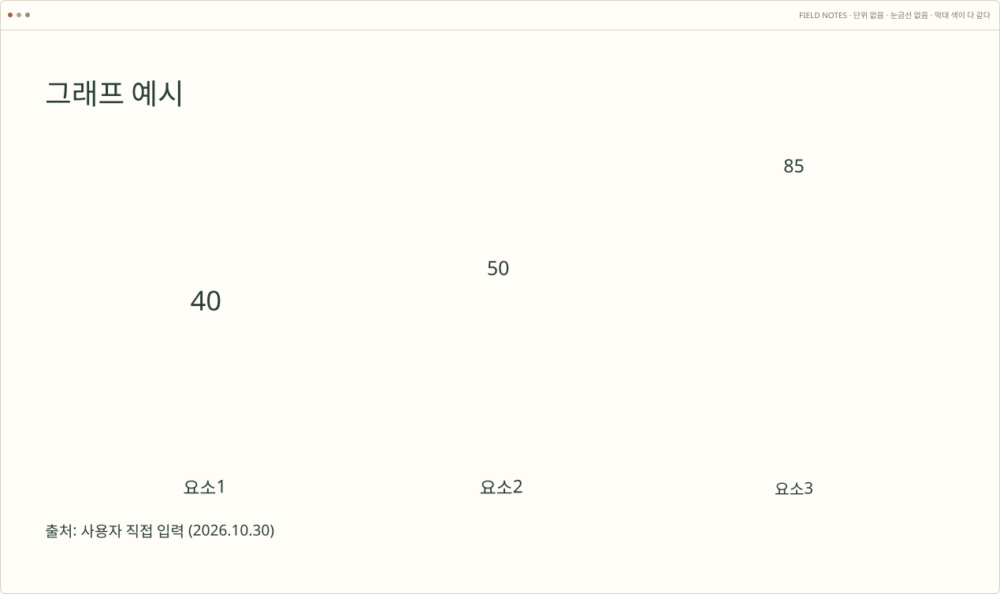
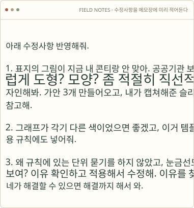
남의 템플릿을 빌리지 않고 내 답으로 지었다. 그래프 숫자는 말이 아니라 파일로 지킨다. 그런데 이 파일들은 아직 정책자료 폴더 안에서만 돈다.
NEXT · [보스] 숲의 마지막 문지기
일곱 스테이지를 하나씩 묻는다
시종들을 내 업무 폴더로 데려가며 주문서를 고친다
내 자료로 발표자료 한 벌이 나오면 승리 · 시즌 1 마지막 주
숲 끝이 어둑하다. 무언가 기다리고 있다.
“다음 주엔 이 숲의 마지막 문지기를 만나요.
지나온 일곱 스테이지를 전부 물어볼 거예요.”
TO BE CONTINUED · WEEK 08
▼